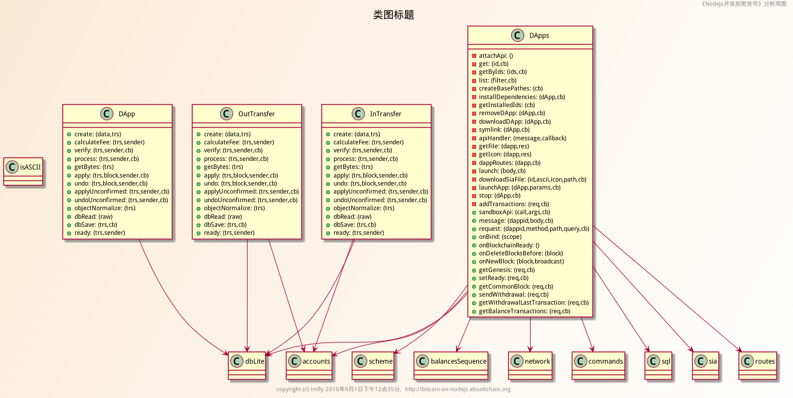
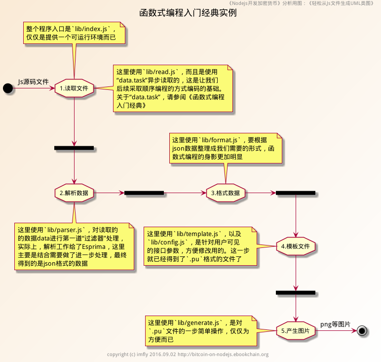

轻松从Js文件生成UML类图
前言
上一篇《函数式编程入门经典》，罗嗦了很长，很多小伙伴看得云里雾里。这里提供一个实例，让大家切身感受函数式编程的奥妙和趣味。当然，仅仅为了举例而写代码就没有什么意义了，本书提供的例子都是承担了某项任务的具体项目或工具，这个例子自然也不能例外。
本书用到了大量的Uml类图，经常有小伙伴问我用什么工具画的。说实话，前几篇是我个人一点点手工整理的，但后来就感觉在浪费生命，作为程序员，怎么可能容忍这样的事情反复发生。所以，就有了 js2uml（见参考）这个小工具。只不过，当初目的单一，仅仅使用正则表达式过滤js代码（v0.1.0），所以不够灵活，自然也没有单独放出来。现在引入了抽象语法树，顺带使用函数式编程进行了重构，也让该工具更加通用了。
因为代码量很少，并且前面对函数式编程进行了大量阐述，这里就不再详细描述编码过程了，仅仅把设计思路和流程提供出来，喜欢的小伙伴请自己查阅源代码吧。
工具简要介绍
这是一个命令行工具，可以轻松从Js文件生成UML类图，比如：

主要实现了以下两个功能：
（1）直接读取js源码，产生 plantuml 认识的格式文件。我个人喜欢用.pu作为后缀。内容格式，比如：
@startuml
title 区块链相关类图及其关联关系
footer copyright (c) imfly 2016.07.23 http://bitcoin-on-nodejs.ebookchain.org
header 《Nodejs开发加密货币》分析用图：《区块链》
Class Loader {
...
}
' relationship
Block -right-> transaction
@enduml然后，使用 Graphviz 工具就可以导出png等格式的图片了。之所以提供导出这类格式的文件，主要是工具对于排版的处理还不够智能，布局、关联关系、背景图片等，有时需要通过手工进一步修改。另外，这也为以后与其他工具的集成，提供了便利。
（2）直接生成png,svg等格式的图片文件。这是对 Graphviz 的直接扩展。
具体安装使用方法非常简单，请直接查看它的文档吧，这里不再赘述。
能从中学点什么？
通过这个小工具的开发，可以学习到下面的技能：
- 抽象语法树（Abstract Syntax Tree, AST）的处理。抽象语法树有很多用途，大部分人可能很少直接在代码里使用，但是几乎每个人也都在用，比如：编辑器的自动提示、自动完成等功能，使用Nodejs的小伙伴，最后都要对代码进行混淆、压缩等处理，那些工具也都要用到；
- 函数式编程。原来的版本，是完全面向对象的编程方式，也没有使用AST，所以代码长，功能有限。这个版本，进行了优化，使用函数式编程，大大缩减了代码量，还提供了直接导出.png/.svg/.pu等各种格式图片的能力;
- 学习plantuml。这是使用代码处理Uml的最好方式，直接使用dot语言（生成的.pu文件就是），像编写程序一样画Uml图，真的只有程序猿才能体会的畅快。
- 命令行工具开发。
关于抽象语法树
在没有任何运行环境的情况下，要想对源码进行分析，通常有两种方法可选，一个就是正则表达式，正如第一版本里用到的，但是正则表达式仅能抽取源码有限的格式，很容易把格式固定，特别是对js这种没有真正的类的概念的脚本语言来说，就更不通用。抽象语法树是程序的一种中间表示形式，是专门用于程序分析的。凡是涉及到对源程序进行操作和处理的应用，都会用到抽象语法树，比如我们大家经常使用的智能编辑器、语言翻译器等。因此，更好的，也是最通用方法就是使用抽象语法树。
抽象语法树的具有不依赖于具体编程语言文法和语言细节的特点，所以对于不同的编码方式，甚至不同的编程语言，在语法分析的时候，都能构造出相同的语法树，这就为后端实现了清晰，统一的接口。这对于把控代码质量，控制编码行为，甚至必要的时候批量重构，提供了可行的操作方法。我们之所以要研究和使用这项技术，一个根本目的是一个与亿书项目配套的辅助项目——亿书的远程开源协作开发平台。
该平台，能监控每一个贡献者的代码数量和质量，给出优化建议，对贡献者的每次代码贡献，通过亿书智能合约自动支付合理的亿书币报酬，最后写入区块链。这个平台将改变程序员的生活方式，让按照代码贡献计酬更加科学，加之区块链智能合约的底层支持，程序员无论身处何处，都可以随时贡献自己的智慧，并获得收益，让远程办公成为非常简单和现实的事情。
前面也说了，对js代码的混淆和压缩，都用到了抽象语法树。著名的混淆和压缩工具 UglifyJS 最早是自己开发的解析工具，但是最新版本 UglifyJS2 使用acorn进行了重写。在Node.js的世界里，有几个比较优秀的抽象语法树处理包，除了acorn，还有一个Esprima。我这里使用的是Esprima。
工具实现过程
（1）基本需求
这个工具需求非常简单，就是给一个js源码文件，直接导出分析后的Uml文件或图片。这类简单的应用模型，非常普遍，甚至可以说任何大的应用项目，都是由这类简单的应用模型搭积木似的搭起来的。我们在入门部分提到过，使用NOde.js，最好习惯数据“流”的概念，这里从js文件到Uml或图片文件的过程，就是典型的数据“流”的实现。我们要做的，仅仅是在这个“流”上制造一些“过滤器”而已。
上一篇关于函数式编程的文章里，我们也说函数式编程更适合处理数据“流”，其做法的一个重点是告诉程序“是什么”（声明式），而不是“怎么干”（命令式）。换句话说，我们只要好好描述这里的“过滤器”是什么就行了，千万不要关心它们怎么干。比如开发的过程中，为了调试方便，我先是这么搭积木的（命令式）：
// 文件 ./lib/index.js
// 26行
function(data) {
var functionList = parser(data);
var formatData = format(functionList);
var result = template(formatData);
...
}这段代码一看就可以写成这样：
var result = template(format(parser(data)));所以，这段代码在函数式编程里就是（我们使用ramda来处理函数式编程）：
// 11行
var getPuml = _.compose(template, format, parser); //声明式
// 28行
var puml = getPuml(data);沿着这个思路逐个拆分和组合，就非常清晰的处理了整个过程。
（2）架构流程和代码结构
还是用一张图来说明吧，非常简单。

总结
关于编码的方法论，这两篇文章已经足够。这篇文章仅仅是为函数式编程提供了一个小例子。例子本身并不完美，没有收集属性变量，也没有添加测试（实际项目不提倡），很多函数式编程的高级特性也都没有涉及到，不能算是完全的函数式编程，后续会进一步完善提升。在亿书后续的开发中，也会使用大量函数式编程的好经验、好做法，进一步压缩代码量，提高健壮性和可维护性。
凡事过犹不及，尽管用了大量篇幅来介绍函数式编程，但是并不代表要大家完全使用函数式编程来开发，如果能让大家在处理一些问题的时候，不自觉的使用一些函数式编程的方法实践，也就达到目的了。比如根据需要，对某个功能、模块，甚至仅仅是某些函数，适当合理的采用函数式编码的方式，已经足够提高工作效率和代码健壮性了。
链接
本系列文章即时更新，若要掌握最新内容，请关注下面的链接
本源文地址： https://github.com/imfly/bitcoin-on-nodejs
亿书官网： http://ebookchain.org
亿书官方QQ群：185046161（亿书完全开源开放，欢迎各界小伙伴参与）